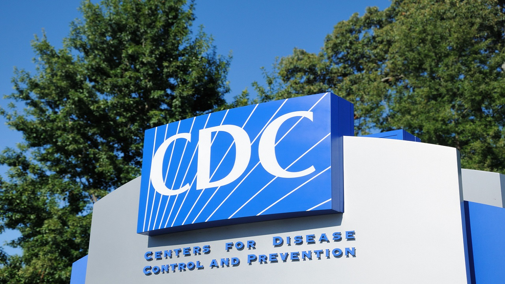

Data suggests 'likely' link between COVID-19 mRNA vaccines, rare heart issues in teens, CDC panel says
A CDC advisory panel suggested a likely link between mRNA COVID-19 vaccines and rare reports of heart inflammation in younger age groups, but noted that the benefits of receiving a shot still 'clearly outweigh' the risks.
The COVID-19 Vaccine Safety Technical (VaST) Work Group, which presented during the Advisory Committee on Immunization Practices (ACIP) meeting Wednesday, said the 'data available to date suggest likely association of myocarditis with mRNA vaccination in adolescents and young adults.'The group noted myocarditis most often appeared after the second dose, which was similar to data reported through VAERS.
The experts also discussed potentially adding risk language to vaccines.
'It does appear that mRNA vaccines may be a new trigger for myocarditis yet it does have some different characteristics...' said Dr.Matthew Oster, MPH, CDC COVID-19 Vaccine Task Force during the panel meeting Wednesday.
Dr.Tom Shimabukuro, deputy director of the Immunization Safety Office at the CDC, noted 484 preliminary reports of myocarditis and pericarditis among vaccinated people under 30 as of June 11 against a backdrop of over 27 million administered doses.Of the total, 323 met CDC’s case definitions for myocarditis and/or pericarditis, 309 of whom were hospitalized, 295 were discharged at the time of analysis and at least 79% recovered from symptoms.Nine remained in hospital care, with two in intensive care, and 14 weren’t hospitalized.
CDC DIRECTOR SAYS BENEFITS OF COVID-19 VACCINATION ‘FAR OUTWEIGH’ RISKS OF RARE HEART ISSUES
'We’re observing this in younger age groups, mainly in people in the teens and early twenties and observing it more in males compared to females,' Shimabukuro said.
Chest pain was the most common presenting symptom, followed by dyspnea, or difficulty breathing.
WHAT IS MYOCARDITIS?SIGNS, SYMPTOMS TO LOOK FOR
The panel is still investigating more than 140 preliminary reports to confirm myocarditis or pericarditis through medical records.About 300 million doses have been administered in the U.S. to eligible populations.The ACIP had met to review instances of myocarditis and pericarditis among COVID-19 vaccine recipients and discuss risk-benefit analysis.
CLICK HERE FOR COMPLETE CORONAVIRUS COVERAGE
A slide published ahead of the presentation during the Work Group Interpretation portion stated that 'currently, the benefits still clearly outweigh the risks for COVID-19 vaccination in adolescents and young adults.'The group also noted that there is a need for continued monitoring.
Fox News' Alexandria Hein contributed to this report.
Posted On: 2021-06-23T00:00:00
Posted By: Kayla Rivas

Content Date: 2021-06-23
Download Date: 2021-09-16
Document ID: L0C04G8H9